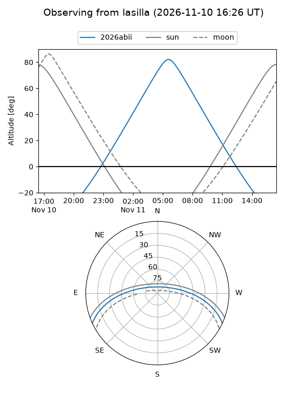
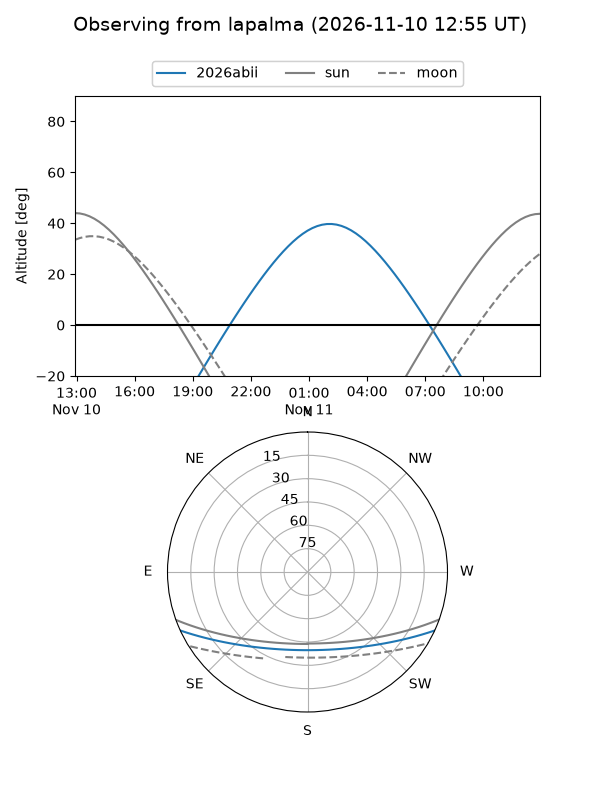
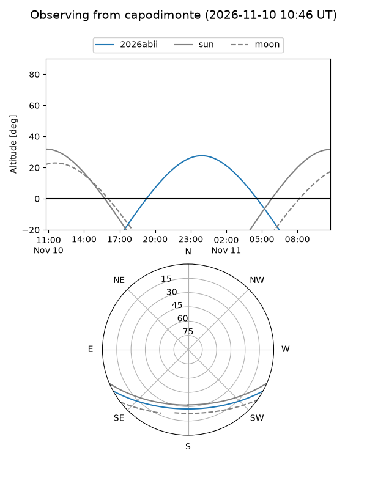
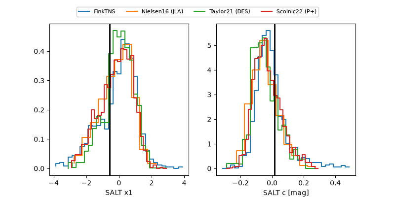

2026abii
Target 2026abii at 2026-11-10 10:07
Aliases and brokers:
FINK-ZTF: ztf.fink-portal.org/ZTF26abyzmtj
Lasair-ZTF: lasair-ztf.lsst.ac.uk/objects/ZTF26abyzmtj
ALeRCE-ZTF: alerce.online/object/ZTF26abyzmtj
YSE-PZ: ziggy.ucolick.org/yse/transient_detail/2026abii
TNS name: wis-tns.org/object/2026abii
Direct TNS query: direct search
alt names
ZTF26abyzmtj (ztf,fink_ztf)
2026abii (tns,yse)
Coordinates:
equatorial (ra, dec) = 62.9928,-21.57107
equatorial (HMS+DMS) = 04:11:58.27,-21:34:15.84
galactic (l, b) = (217.3694,-44.28072)
Flags:
peak dt: +4.9
Photometry:
last ztfg=18.94, ztfr=19.02
2 ztfg, 2 ztfr detections
Lightcurve
Visibility



Additional plots
